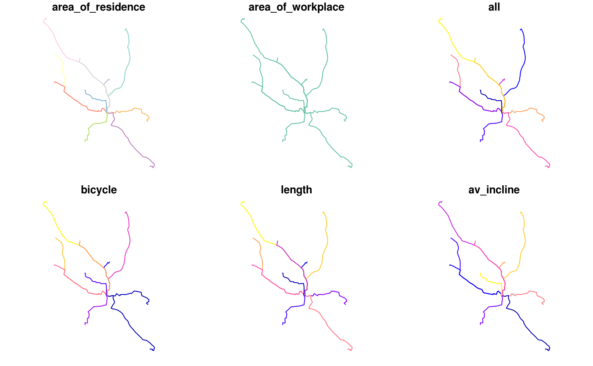

The goal of pct is to increase the accessibility and reproducibility of the data produced by the Propensity to Cycle Tool (PCT), a research project and web application hosted at www.pct.bike. For an overview of the data provided by the PCT, clicking on the previous link and trying it out is a great place to start. An academic paper on the PCT provides detail on the motivations for and methods underlying the project.
A major motivation behind the project was making transport evidence more accessible, encouraging evidence-based transport policies. The code base underlying the PCT is publicly available (see github.com/npct). However, the code hosted there is not easy to run or reproduce, which is where this package comes in: it provides quick access to the data underlying the PCT and enables some of the key results to be reproduced quickly. It was developed primarily for educational purposes (including for upcoming PCT training courses) but it may be useful for people to build on the the methods, for example to create a scenario of cycling uptake in their town/city/region.
In summary, if you want to know how PCT works, be able to reproduce some of its results, and build scenarios of cycling uptake to inform transport policies enabling cycling in cities worldwide, this package is for you!
Installation
You can install the development version of the package as follows:
Load the package as follows:
Get PCT data
From feedback, we hear that the use of the data is critical in decision making. Therefore, one area where the package could be useful is making the data “easily” available to be processed.
-
get_pct: the basic function to obtain data available here.
The rest of these should be self explanatory.
get_pct_centroidsget_pct_linesget_pct_rnetget_pct_routes_fastget_pct_routes_quietget_pct_zonesuptake_pct_godutchuptake_pct_govtarget
For example, to get the centroids in West Yorkshire:
centroids = get_pct_centroids(region = "west-yorkshire")
#> Loading required package: sp
plot(centroids[, "geo_name"])
Likewise to download the desire lines for “west-yorkshire”:
lines = get_pct_lines(region = "west-yorkshire")
lines = lines[order(lines$all, decreasing = TRUE), c("all")]
plot(lines[1:10,], lwd = 4)
Estimate cycling uptake
An important part of the PCT is its ability to create model scenarios of cycling uptake. Key to the PCT uptake model is ‘distance decay’, meaning that short trips are more likely to be cycled than long trips. The functions uptake_pct_govtarget() and uptake_pct_godutch() implement uptake models used in the PCT, which use distance and hilliness per desire line as inputs and output the proportion of people who could be expected to cycle if that scenario were realised. The scenarios of cycling uptake produced by these functions are not predictions of what will happen, but illustrative snapshots of what could happen if overall propensity to cycle reached a certain level. The uptake levels produced by Go Dutch and Government Target scenarios (which represent increases in cycling, not final levels) are illustrated in the graph below (other scenarios could be produced, see the source code see how these models work):
distances = 1:20
hilliness = 0:5
uptake_df = data.frame(
distances = rep(distances, 6),
hilliness = rep(hilliness, each = 20)
)
p_govtarget = uptake_pct_govtarget(
distance = uptake_df$distances,
gradient = uptake_df$hilliness
)
p_godutch = uptake_pct_godutch(
distance = uptake_df$distances,
gradient = uptake_df$hilliness
)
uptake_df = rbind(
cbind(uptake_df, scenario = "govtarget", pcycle = p_govtarget),
cbind(uptake_df, scenario = "godutch", pcycle = p_godutch)
)
library(ggplot2)
ggplot(uptake_df) +
geom_line(aes(
distances,
pcycle,
linetype = scenario,
colour = as.character(hilliness)
)) +
scale_color_discrete("Gradient (%)")
The proportion of trips made by cycling along each origin-destination (OD) pair therefore depends on the trip distance and hilliness. The main input dataset into the PCT is OD data and, to convert each OD pair into a geographic desire line, geographic zone or centroids. Typical input data is provided in packaged datasets od_leeds and zones_leeds:
Reproduce PCT for Leeds
This example shows how scenarios of cycling uptake, and how ‘distance decay’ works (short trips are more likely to be cycled than long trips).
The input data looks like this (origin-destination data and geographic zone data):
class(od_leeds)
#> [1] "tbl_df" "tbl" "data.frame"
od_leeds[c(1:3, 12)]
#> # A tibble: 10 x 4
#> area_of_residence area_of_workplace all bicycle
#> <chr> <chr> <dbl> <dbl>
#> 1 E02002363 E02006875 922 43
#> 2 E02002373 E02006875 1037 73
#> 3 E02002384 E02006875 966 13
#> 4 E02002385 E02006875 958 52
#> 5 E02002392 E02006875 753 19
#> 6 E02002404 E02006875 1145 10
#> 7 E02002411 E02006875 929 27
#> 8 E02006852 E02006875 1221 99
#> 9 E02006861 E02006875 1177 56
#> 10 E02006876 E02006875 1035 10
class(zones_leeds)
#> [1] "sf" "data.frame"
zones_leeds[1:3, ]
#> Simple feature collection with 3 features and 6 fields
#> geometry type: MULTIPOLYGON
#> dimension: XY
#> bbox: xmin: -1.727245 ymin: 53.90046 xmax: -1.294313 ymax: 53.94589
#> epsg (SRID): 4326
#> proj4string: +proj=longlat +datum=WGS84 +no_defs
#> objectid msoa11cd msoa11nm msoa11nmw st_areasha st_lengths
#> 2270 2270 E02002330 Leeds 001 Leeds 001 3460674 10002.983
#> 2271 2271 E02002331 Leeds 002 Leeds 002 21870986 26417.665
#> 2272 2272 E02002332 Leeds 003 Leeds 003 2811303 8586.548
#> geometry
#> 2270 MULTIPOLYGON (((-1.392046 5...
#> 2271 MULTIPOLYGON (((-1.340405 5...
#> 2272 MULTIPOLYGON (((-1.682211 5...The stplanr package can be used to convert the non-geographic OD data into geographic desire lines as follows:
library(sf)
#> Linking to GEOS 3.5.0, GDAL 2.2.2, PROJ 4.8.0
desire_lines = stplanr::od2line(flow = od_leeds, zones = zones_leeds[2])
#> Registered S3 method overwritten by 'R.oo':
#> method from
#> throw.default R.methodsS3
#> Creating centroids representing desire line start and end points.
#> Warning in st_centroid.sf(zones): st_centroid assumes attributes are
#> constant over geometries of x
#> Warning in st_centroid.sfc(st_geometry(x), of_largest_polygon =
#> of_largest_polygon): st_centroid does not give correct centroids for
#> longitude/latitude data
plot(desire_lines[c(1:3, 12)])
We can convert these straight lines into routes with a routing service, e.g.:
routes_fast = stplanr::line2route(desire_lines, route_fun = stplanr::route_cyclestreet)
#> 10 % out of 10 distances calculated
#> 20 % out of 10 distances calculated
#> 30 % out of 10 distances calculated
#> 40 % out of 10 distances calculated
#> 50 % out of 10 distances calculated
#> 60 % out of 10 distances calculated
#> 70 % out of 10 distances calculated
#> 80 % out of 10 distances calculated
#> 90 % out of 10 distances calculated
#> 100 % out of 10 distances calculatedWe got useful information from this routing operation. We will add the desire line data onto vital data from the routes (from a cycling uptake perspective, distance and hilliness of routes):
routes_vital = sf::st_sf(
cbind(
sf::st_drop_geometry(desire_lines[c(1:3, 12)]),
sf::st_drop_geometry(routes_fast[c("length", "av_incline")]),
geometry = routes_fast$geometry
))
plot(routes_vital)
Now we estimate cycling uptake:
routes_vital$uptake = uptake_pct_govtarget(distance = routes_vital$length, gradient = routes_vital$av_incline)
#> Distance assumed in m, switching to km
routes_vital$bicycle_govtarget = routes_vital$bicycle +
round(routes_vital$uptake * routes_vital$all)Let’s see how many people started cycling:
Nearly 1000 more people cycling to work, just in 10 desire is not bad! What % cycling is this, for those routes?
sum(routes_vital$bicycle_govtarget) / sum(routes_vital$all)
#> [1] 0.1152519
sum(routes_vital$bicycle) / sum(routes_vital$all)
#> [1] 0.03963324It’s gone from 4% to 11%, a realistic increase if cycling were enabled by good infrastructure and policies.
Now: where to prioritise that infrastructure and those policies?
rnet = stplanr::overline2(routes_vital, attrib = c("bicycle", "bicycle_govtarget"))
lwd = rnet$bicycle_govtarget / mean(rnet$bicycle_govtarget)
plot(rnet["bicycle_govtarget"], lwd = lwd)
We can view the results in an interactive map and share with policy makers, stakeholders, and the public! E.g. (see interactive map here):